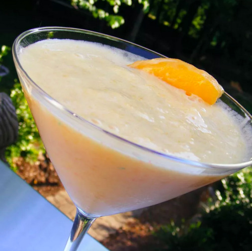

Mango-Peach Smoothie

~ Smoothie Stop ~
Use fresh or frozen fruit in this refreshing mango and peach smoothie, perfect on a hot sunny day.
Prep Time: 10 mins | Total Time: 10 mins | Servings: 2
~ Ingredients ~
- 1 peach, sliced
- 1 mango, peeled and diced
- 1/2 cup vanilla soy milk
- 1/2 cup orange juice, or as needed
~ Steps ~
- Place peach, mango, soy milk, and orange juice into a blender. Cover, and puree until smooth. Pour into glasses to serve.
Nutrition (Per Serving): 105 calories | 1g fat | 22g carbs | 3g protein